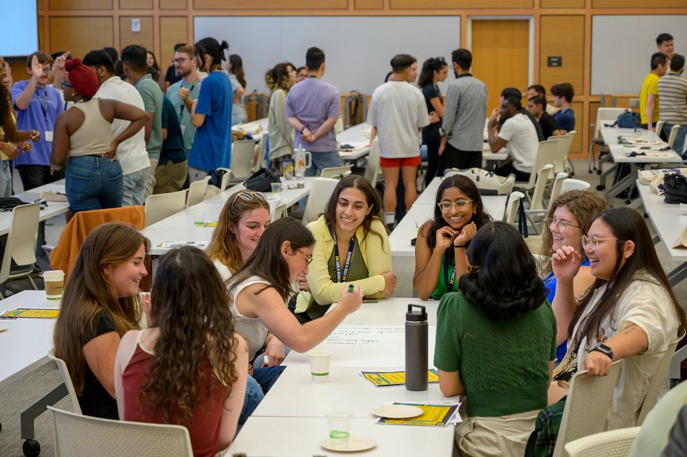

Craft a Resume that Tells Your Story
Your resume is often your first impression—an opportunity to highlight your unique strengths, skills, and experiences to potential employers. Whether you’re starting from scratch or looking to polish an existing resume, these resources are here to help you every step of the way.
UMSI students are in high demand, and a clear, well-organized resume will help you stand out among applicants. On this page, you'll find practical tips, templates, and guides—all tailored to the needs of School of Information students and aligned with employer expectations.
Need feedback? You can always meet with a CDO Career Coach to review your materials.

Resume Writing Made Easy: Steps to Success
- Download a UMSI-Approved Template: Start with a format that works—no need to design from scratch.
- Gather Your Experiences: List jobs, internships, volunteer roles, coursework, and projects most relevant to your goals.
- Write Impactful Bullets: Use action verbs and highlight your skills, results, and unique contributions.
- Tailor for Each Opportunity: Customize your resume for every job or internship you pursue.
- Review and Edit: Proofread for errors, check formatting, and ask for feedback from peers or a career coach.
Resume Resources
UMSI Resume Guide and Rubric
Comprehensive UMSI guide including tips, formatting rules, and sample accomplishments.
Open Resume GuideWriting Resume Bullets
Learn how to write stronger accomplishment statements using action verbs, impact, and clear structure.
Open Resume Bullets GuideResume Rubric
Evaluate your resume using the same criteria as UMSI’s Career Development Office.
Open Resume RubricApplication Materials: Workshops and More
Attend a Resume Refresh workshop, review video tutorials, or access additional templates.
Open Application MaterialsReady for review? Book a resume review appointment with a CDO Career Coach.
Resume FAQ
How long should my resume be?
For most UMSI students and new grads, one page is best. More experienced professionals may require two pages.
Do I need a different resume for each application?
It’s wise to tailor your resume to the requirements and keywords of each opportunity.
Is it okay to include coursework or student projects?
Absolutely! UMSI coursework and projects are valued by employers, especially if they show relevant skills and impact.
How often should I update my resume?
Update your resume every semester, after major projects, or whenever you gain a new role or responsibility.
Cover Letter Guide and Rubric
This guide from the University of Michigan School of Information provides comprehensive instructions and examples for writing effective, professional cover letters tailored to specific roles and industries. It emphasizes the importance of clear formatting, concise structure, and personalized content that connects an applicant’s skills, experiences, and motivations directly to the position and organization.
The guide outlines best practices for each section of a cover letter, including the introduction, body paragraphs, and conclusion, and encourages students to use concrete examples, quantify achievements, and align their narratives with job descriptions. It also highlights the value of research, thoughtful customization, and professional tone, while offering templates, rubrics, and sample letters to support students throughout their job and internship application process.
Using AI to Support Your Career Development
Prompt Resource Guide
-
Generative AI, a powerful tool that creates text, images, and more from prompts, has emerged as a valuable resource in various aspects of career planning. From crafting compelling resumes and cover letters to preparing for interviews and networking, generative AI can streamline these processes, helping you present your best self to potential employers.
-
To get the most out of generative AI, users should employ practical, effective strategies and sample prompts.
-
We’ll begin with an overview of what generative AI is, exploring its capabilities and the different platforms available to you.
-
Following that, we will delve into specific career planning tasks, providing you with tailored prompts you can use to create standout application materials and enhance your career development journey.
-
Whether you’re just starting your career exploration or are on the verge of graduation, this guide will equip you with the skills and knowledge to make the most of generative AI in your career planning journey.

AI Prompt Resource Guide Resources
Using AI to Support Your Career Development
Generative AI, a powerful tool that creates text, images, and more from prompts, has emerged as a valuable resource in various aspects of career planning.
Open AI Prompt GuideUM-GPT
We highly recommend UM-GPT, because it offers greater privacy/security than public platforms such as ChatGPT.
Open UM-GPTAI Prompt Resource Guide: Cover Letters
A well-crafted cover letter complements your resume and highlights why you’re the perfect fit for a role.
Open Cover Letter PromptsAI Prompt Resource Guide: LinkedIn
Your LinkedIn profile is a powerful networking and job search tool.
Open LinkedIn Prompts